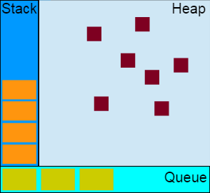
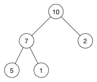
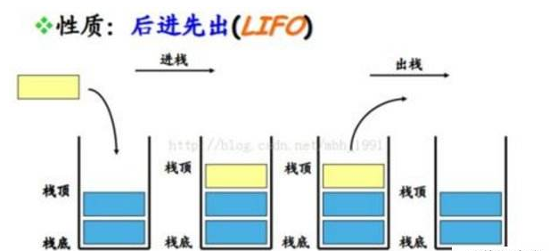
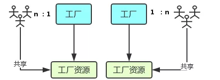
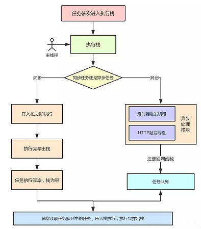
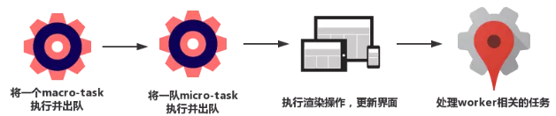
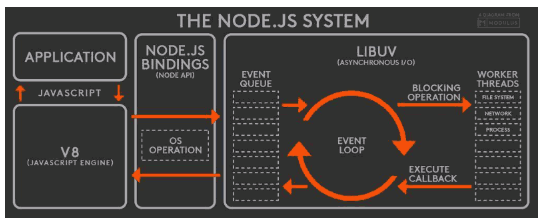
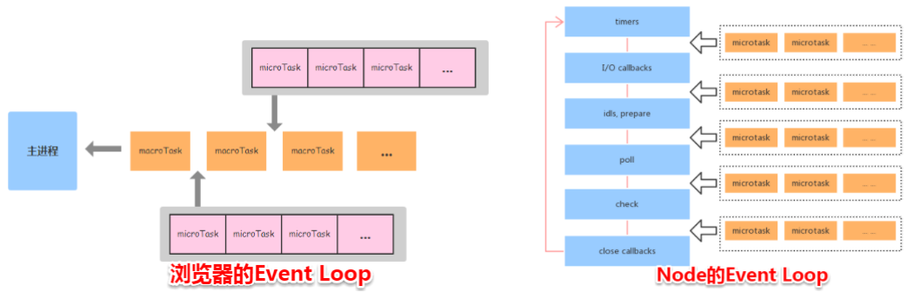

# 理解 EventLoop
# 前言
Event Loop即事件循环，是指浏览器或Node的一种解决javaScript单线程运行时不会阻塞的一种机制，也就是我们经常使用异步的原理。
# 内容
# 一、堆，栈、队列

# 1.1 堆
堆是一种数据结构，是利用完全二叉树维护的一组数据，堆分为两种，一种为最大堆，一种为最小堆，将根节点最大的堆叫做最大堆或大根堆，根节点最小的堆叫做最小堆或小根堆。
堆是线性数据结构，相当于一维数组，有唯一后继。
如最大堆

# 1.2 栈
栈在计算机科学中是限定仅在表尾进行插入或删除操作的线性表。栈是一种数据结构，它按照后进先出的原则存储数据，先进入的数据被压入栈底，最后的数据在栈顶，需要读数据的时候从栈顶开始弹出数据。
栈是只能在某一端插入和删除的特殊线性表。

# 1.3 队列
特殊之处在于它只允许在表的前端进行删除操作，而在表的后端进行插入操作，和栈一样，队列是一种操作受限制的线性表。
进行插入操作的端称为队尾，进行删除操作的称为队头。队列中没有元素时，称为空队列。
队列的数据元素又称为队列元素。在队列中插入一个队列元素称为入队，从队列中一个队列歹毒称为出队。因为队列只允许在一端插入，在另一端删除，所以只有最早进入队列的元素才能最先从队列中删除，故队列又称为先进先出。
# 二、线程与进程
官方的说法是：进程是 CPU 资源分配的最小单位；线程是 CPU 调度的最小单位。
这两句话并不好理解，我们先来看张图：

- 进程好比图中的工厂，有单独的专属自己的工厂资源。
- 线程好比图中的工人，多个工人在一个工厂中协作工作，工厂与工人是 1:n 的关系。也就是说一个进程由一个或多个线程组成，线程是一个进程中代码的不同执行路线；
- 工厂空间是工厂共享的，这象征一个进程的内在空间是共享的，每个线程都可用这些共享内存。
- 多个工厂之间独立存在。
# 三、Event Loop
在JavaScript中，任务被分为两种，一种宏任务（MacroTask）也叫Task，一种叫微任务（MicroTask）。
# 3.1 MacroTask（宏任务）
script全部代码、setTimeout、setInterval、setImmediate（浏览器暂时不支持，只有 IE10 支持，具体可见 MDN）、I/O、UI Rendering。
# 3.2 MicroTask（微任务）
Process.nextTick(node独有)、Promise、Object.observe(废弃)、MutationObserver（具体使用方式查看[这里](http://javascript.ruanyifeng.com/dom/mutationobserver.html）
# 四、浏览器中的 Event Loop
Javascript有一个main thread主线程和call-stack调用栈(执行栈)，所有的任务都会被放到调用栈等待主线程执行。
# 4.1 JS 调用栈
JS 调用栈采用的是后进先出的规则，当函数执行的时候，会被添加到栈的顶部，当执行完后，就会从栈顶移出，直到栈内被清空。
# 4.2 同步任务和异步任务
JavaScript单线程任务被分为同步任务和异步任务，同步任务会在调用栈中按照顺序等待主线程依次执行，异步任务会在异步任务有了结果后，将注册的回调函数放入任务队列中等待主线程空闲的时候（调用栈被清空），被读取到栈内等待主线程的执行。

任务队列Task Queue，即队列，是一种先进先出的一种数据结构。
# 4.3 Event Loop 过程解析

- 一开始执行栈空我们可以把执行栈认为是一个存储函数调用的栈结构，遵循先进后出的原则。 micro 队列空，macro 队列里有且只有一个 script 脚本（整体代码）。
- 全局上下文（script 标签）被推入执行栈，同步代码执行。在执行的过程中，会判断是同步任务还是异步任务，通过对一些接口的调用，可以产生新的 macro-task 与 micro-task，它们会分别被推入各自的任务队列里，同步代码执行完了，script 脚本会被移出 macro 队列，这个过程本质上是队列的 macro-task 的执行和出队的过程。
- 上一步我们出队的是一个 macro-task,这一步我们处理的是 micro-task。但需要注意的是：当 macro-task 出队时，任务是一个一个执行的；而 micro-task 出队时，任务是一队一队执行的。因此我们处理 micro 队列这一步，会逐个执行队列中的任务并把它出队，直到队列被清空。
- 执行渲染操作，更新界面
- 检查是否存在 Web worker 任务，如果有，则对其进行处理
- 上述过程循环往复，直到两个队列都清空
我们总结一下，每一次循环都是一个这样的过程：

当某个宏任务执行完后，会查看是否有微任务队列，如果有，先执行微任务队列中的所有任务，如果没有，会读取宏任务队列中排在最前的任务，执行宏任务的过程中，遇到微任务，依次加入微任务队列。栈空后，再依次读取微任务队列里的任务，依次类推。
mactotask & microtask 的执行顺序

# 五、例子
# 5.1 例一
console.log('start');
setTimeout(function(){
console.log('setTimeout')
},0)
Promise.resolve().then(function(){
console.log('promise1')
}).then(function(){
console.log('promise2')
})
console.log('end')
2
3
4
5
6
7
8
9
10
11
12
13
14
打印台输出的 log 顺序是什么？结合上述的步骤分析。

- 首先，全局代码（main()）压入调用栈执行，打印
start; - 接下来
setTimeout压入macrotask队列，promise.then回调放入microtask队列，最后执行console.log('end')，打印出end; - 至此，调用栈中的代码被执行完成，回顾
macrotask的定义，我们知道全局代码属于macrotask，macrotask执行完，那接下来就是执行microtask队列的任务了，执行promise回调打印promise1; promise回调函数默认返回undefined，promise 状态变为fullfill触发接下来的then架设，继续压入microtask队列，event loop 会把当前的 microtask 队列一直执行完，此时执行第二个promise.then回调打印出promise2;- 这时
microtask队列已经为空，从上面的流程图可以知道，接下来主线程会去做一些 UI 渲染工作，然后开始下一轮event loop,执行setTimeout的回调，打印出setTimeout;
# 5.2 例二
Promise.resolve().then(()=>{
console.log('Promise1')
setTimeout(()=>{
console.log('setTimeout2');
},0)
});
setTimeout(()=>{
console.log('setTimeout1');
Promise.resolve().then(()=>{
console.log('Promise2')
})
},0)
2
3
4
5
6
7
8
9
10
11
12
13
最后输出结果是 Promise1，setTimeout1，Promise2，setTimeout2
- 一开始执行栈的同步任务（这属于宏任务）执行完毕，会去查看是否有微任务队列，上题中存在（有且只有一个），然后执行微任务队列中的所有任务输出
Promise1，同时会生成一个宏任务setTimeout2 - 然后去查看宏任务队列，宏任务
setTimeout1在setTimeout2之前，先执行宏任务setTimeout1，输出setTimeout1 - 在执行宏任务
setTimeout1时会生成微任务Promise2，放入微任务队列中，接着先去清空微任务队列中的所有任务，输出Promise2 - 清空完微任务队列中的所有任务后，就又会去宏任务队列取一个，这回执行的是
setTimeout2
# 六、NodeJS 的 Event Loop
# 6.1 Node 简介
Node 中 Event Loop 和浏览器中的是完全不相同的东西。Nodejs 采用 V8 作为 js 的解析引擎，而 I/O 处理方面使用了自己设计的 libuv，libuv 是一个基于事件驱动的跨平台抽象层，封装了不同操作系统一些底层特性，对处提供统一的 API，事件循环机制也是它里面的实现。

Node.js 的运行机制如下：
- V8 引擎解析 JavaScript 脚本。
- 解析后的代码，调用 Node API。
- libuv 库负责 Node API 的执行。它将不同的任务分配给不同的线程，形成一个 Event Loop(事件循环)，以异步的方式将任务的执行结果返回给 V8 引擎。
- V8 引擎再将结果返回给用户。
# 6.2 六个阶段
其中 libuv 引擎中的事件循环分为 6 个阶段，它们会按照顺序反复运行。每当进入某一个阶段的时候，都会从对应的架设队列中取出函数去执行。当队列为空或者执行的回调函数数量达到系统设定的阈值，就会进入下一阶段。

从上图中，大致看出 node 中的事件循环的顺序：
外部输入数据——>轮询阶段(poll)——>检查阶段(check)——>关闭事件回调阶段(close callback)——>定时器检测阶段(timer)——>I/O 事件回调阶段(I/O callbacks)——>闲置阶段(idle,prepare)——>轮询阶段(按照该顺序反复运行)
- timers 阶段：这个阶段执行 timer(setTimeout、setInterval)的回调
- I/O callbacks 阶段：处理一些上一轮循环中的少数未执行的 I/O 回调
- idle,prepare 阶段：仅 node 内部使用
- poll 阶段：获取新的 I/O 事件，适当的条件下 node 将阻塞在这里
- check 阶段：执行 setImmediate()的回调
- close callbacks 阶段：执行 socket 的 close 事件回调
注意：上面六个阶段都不包括process.nextTick()
接下去我们详细介绍timers、poll、check这 3 个阶段，因为日常开发中的绝大部分异步任务都是在这 3 个阶段处理的。
(1) timer
timers 阶段会执行 setTimeout 和 setInterval 回调，并且是由 poll 阶段控制的。同样，在 Node 中定时器指定的时间也不是准确时间，只能是尽快执行。
(2) poll
poll 是一个至关重要的阶段，这一阶段中，系统会做两件事情
- 回到 timer 阶段执行回调
- 执行 I/O 回调
并且在进入该阶段时如果没有设定了 timer 的话，会发生以下两件事情
- 如果 poll 队列不为空，会遍历回调队列并同步执行，直到队列为空或者达到系统限制
- 如果 poll 队列为空时，会有两件事发生
- 如果有 setImmediate 回调需要执行，poll 阶段会停止并且进入到 check 阶段执行回调
- 如果没有 setImmediate 回调需要执行，会先行回调被加入到队列中并立即执行回调，这里同样会有个超时时间设置防止设置防止一直先行下去
当然设定了 timer 的话且 poll 队列为空，则会判断是否有 timer 超时，如果有的话会回到 timer 阶段执行回调。
(3) check 阶段
setImmediate()的回调会被加入 check 队列中，从 event loop 的阶段图可以知道，check 阶段的执行顺序在 poll 阶段之后。
我们先来看个例子：
console.log('start')
setTimeout(()=>{
},0);
setTimeout(()=>{
console.log('timer2')
Promise.resolve().then(function(){
console.log('promise2')
},0)
})
Promise.resolve().then(function(){
console.log('promise3')
})
console.log('end');
// start=>end=>promise3=>timer1=>timer2=>promise1=>promise2
2
3
4
5
6
7
8
9
10
11
12
13
14
15
- 一开始执行栈的同步任务(这属于宏任务)执行完毕后(依次打印出 start end,并将 2 个 timer 依次放入 timer 队列)，会先去执行微任务(这点跟浏览器端的一样)，所以打印出 promise3
- 然后进入 timer 阶段，执行 timer1 的回调函数，打印 timer1，并将 promise.then 回调放入 microtask 队列，同样的步骤执行 timer2，打印 timer2；这点跟浏览器端相差比较大，timer 阶段有几个 setTimeout/setInterval 都会依次执行，并不像浏览器端，每执行一个宏任务后就支执行一个微任务。
# 6.3 Micro-Task 与 Macro-Task
Node 端事件循环中的异步队列也是这两种：macro（宏任务）队列和 micro（微任务）队列。
- 常见的 macro-task 比如：setTimeout、setInterval、setImmediate、script(整体代码)、I/O 操作等。
- 常见的 micro-task 比如：process.nextTick、new Promise().then(回调)等。
# 6.4 注意点
(1) setTimeout 和 setImmediate
二者非常相似，区别主要在于调用时间时机不同。
- setImmediate 设计在 poll 阶段完成时执行，即 check 阶段。
- setTimeout 设计在 poll 阶段为空闲时，且设定到达后执行，但它的 timer 阶段执行
setTimeout(function timeout(){
console.log('timeout');
},0);
setImmediate(function immediate(){
console.log('immediate');
})
2
3
4
5
6
7
- 对于以上代码来说，setTimeout 可能执行在前，也可能执行在后。
- 首先 setTimeout(fn,0)===setTimeout(fn,1)这是由源码决定的进入事件循环也是需要成本的，如果在准备时候花费了大于 1ms 的时间，那么在 timer 阶段就会直接执行 setTimeout 回调
- 如果准备时间花费小于 1ms，那么就 setImmediate 回调先执行了
但当二者在异步 i/o callback 内部调用时，总是先执行 setImmediate，再执行 setTimeout
const fs = require('fs');
fs.readFile(__filename,()=>{
setTimeout(()=>{
console.log('timeout')
},0)
setImmediate(()=>{
console.log('immedidate')
})
})
// immediate
// timeout
2
3
4
5
6
7
8
9
10
11
12
13
14
在上述代码中，setImmediate 永远先执行。因为两个代码写在 IO 回调中，IO 回调是在 poll 阶段执行，当回调执行完毕后队列为空，发现存在 setImmediate 回调，所以就直接跳转到 check 阶段去执行回调了。
(2) process.nextTick
这个函数其实是独立于 Event Loop 之外的，它有一个自己的队列，当每个阶段完成后，如果存在 nextTick 队列，就会清空队列中的所有回调函数，并且优先于其他 microtask 执行。
setTimeout(()=>{
console.log('timer1')
Promise.resolve().then(function(){
console.log('promise1')
})
},0)
process.nextTick(()=>{
console.log('nextTick')
process.nextTick(()=>{
console.log('nextTick');
process.nextTick(()=>[
console.log('nextTick')
process.nextTick(()=>[
console.log('nextTick')
])
])
})
})
2
3
4
5
6
7
8
9
10
11
12
13
14
15
16
17
18
19
# 七、Node 与浏览器的 Event Loop 差异
浏览器环境下，microtask 的任务队列是每个 macrotask 执行完之后执行。而在 Node.js 中，microtask 会在事件循环的各个阶段之间执行，也就是一个阶段执行完毕，就会去执行 microtask 队列的任务。

接下我们通过一个例子来说明两者区别：
setTimeout(()=>{
console.log('timer1')
Promise.resolve().then(function(){
console.log('promise1')
})
},0)
setTimeout(()=>{
console.log('timer2')
Promise.resolve().then(function(){
console.log('promise2')
})
},0)
2
3
4
5
6
7
8
9
10
11
12
13
14
浏览器端运行结果：timer1=>promise1=>timer2=>promise2
浏览器的处理过程如下:

Node 端运行结果分两种情况：
- 如果 node11 版本一量执行一个阶段里的一个宏任务(setTimeout.setInterval 和 setImmediate)就立刻执行微任务队列，这就跟浏览器端运行一致，最后的结果为
timer1=>promise1=>timer2=>promise2 - 如果是 node10 及其之前版本：要看第一个定时器执行完，第二个定时器是否在完成队列中。
- 如果是第二个定时器还未在完成队列中，最后的结果为
timer1=>promise1=>timer2=>promise2 - 如果是第二个定时器已经完成队列中，则最后的结果为
timer1=>timer2=>promise1=>promise2
- 如果是第二个定时器还未在完成队列中，最后的结果为
- 全局脚本(main())执行，将 2 个 timer 依次放入 timer 队列，main()执行完毕，调用栈空闲，任务队列开始执行；
- 首先进入 timer 阶段，执行 timer1 的回调函数，打印 timer1，并将 promise1.then 回调放入 microtas 队列，同样的步骤执行 timer2,打印 timer2;
- 至此，timer 阶段执行结束，event loop 进入下一个阶段之前，执行 microtask 队列的所有任务，依次打印 promise1、promise2
Node 端的处理过程如下：

# 总结
浏览器和 Node 环境下，microtask 任务队列的执行时机不同
- Node 端，microtask 在事件循环的各个阶段之间执行
- 浏览器端，microtask 在事件循环的 macrotask 执行完之后执行
# 参考资料
- 你不知道的 Event Loop
- 一次弄懂 Event Loop（彻底解决此类面试问题）
- Event Loop
- 浏览器与 Node 的事件循环(Event Loop)有何区别?
- 这一次，彻底弄懂 JavaScript 执行机制
- 一篇文章教会你 Event loop——浏览器和 Node
- 详解 JavaScript 中的 Event Loop（事件循环）机制
- Event Loop
- 面试问到 Event Loop，这样回答最完美
- 「前端进阶」从多线程角度来看 Event Loop
- 【THE LAST TIME】彻底吃透 JavaScript 执行机制
- 《一文看懂浏览器事件循环》
- 说说 JS 的事件循环机制 (含满分答题技巧)
- JavaScript 事件循环：从起源到浏览器再到 Node.js
# 联系作者
平凡世界，贵在坚持。